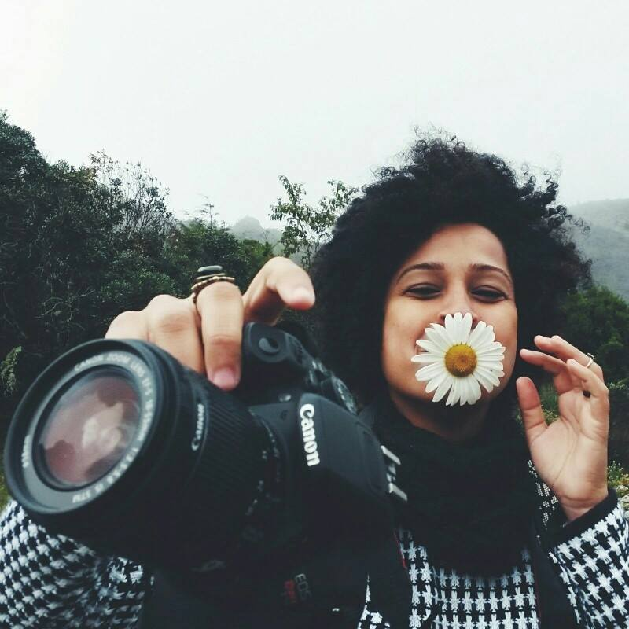
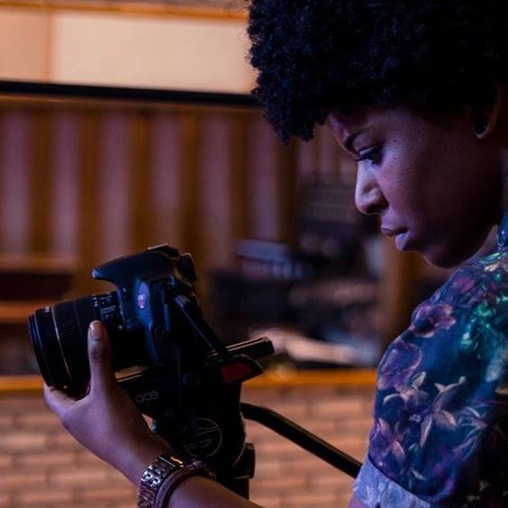

Funções / Assistência de fotografia
As informações de cada perfil são de responsabilidade das profissionais.
Você quer conhecer profissionais de quais estados?
Marcar/Desmarcar todos
CARREGANDO ...
 Carine Fiúza (PB)
Carine Fiúza (PB)
Carine Fiúza
27 anos | João Pessoa (PB)
carinefiuza@gmail.com
Graduanda em Rádio e Tv na Universidade Federal da Paraíba e colaboradora no Laboratório Audiovisual de Produção - LAP que integra o departamento de Cinema e Comunicação da UFPB. Concluiu os curso técnicos de Direção, Ass. de direção e Produção executiva pelo CANNE. Atualmente é Produtora, diretora e fotografa freelancer. Ministra cursos livres de cinema e audiovisual. Como diretora elenca os trabalhos: No escuro (2009), Autonomia Mulheres Rurais (2014), Campanha contra lesbofobia (2016); Como produtora: “Capela” (2014), “O Lendário…” (2014), “Ilha” (2014), “Nó do diabo” (2017). Além dos DVDs de “Chico César” para o Canal Brasil e o “Quinteto convida” para Tv UFPB.
https://www.facebook.com/carine.fiuza.3
Outras atividades de Carine Fiúza
Assistência de direção |
Cineclubismo |
Coordenação de projeto |
Direção |
Exibição |
Fotografia still |
Gerência de mídia |
Oficinas e cursos livres |
Pesquisa e desenvolvimento |
Produção
Amostra de vídeo
 Gabriela Reis (RJ)
Gabriela Reis (RJ)
Gabriela Reis
20 anos | São Paulo (SP)
gabrielacisotoreis@gmail.com
Formada como atriz através de escola técnica profissional. E cursando último período em Fotografia.
Outras atividades de Gabriela Reis
Assistência de Direção |
Atuação |
Direção de Fotografia |
Roteiro
Amostra de vídeo
 Iris Regina (PE)
Iris Regina (PE)
Iris Regina
31 anos | Olinda (PE)
irisregin@gmail.com
Sou nascida no interior de São Paulo onde fiz faculdade de Artes Visuais, mas estou em Pernambuco desde o ano de 2012, onde fiz algumas especializações na área de designer gráfico e hoje dou aula de educação popular na área. Aqui me apaixonei pelo cinema e logo comecei com o cineclubismo e até hoje faço parte do Cineclube Bamako com foco no cinema africano e diáspora Cursos de Roteiro com Marcelo Paes de Carvalho, Laboratório Audiovisual com Pedro Severien, alguns cursos de captação e fotografia, áudio e produção. Fiz curadoria e juri em alguns festivais do estado como o Festival de Cinema de Triunfo, Recifest, Festicine e a I Semana de Comunicação Popular de Recife. Trabalhei na produção da mostra o CRUA (Cinema Rural Andarilho) que aconteceu em algumas cidades do interior de Pernambuco e Paraíba, também na mostra Olhar do Alto no Festival Olinda Coco Zumbi. Integro a produtora Studio Ru@ do CCJ-Recife (Centro de Comunicação e Juventude).
Outras atividades de Iris Regina
Assistência de Direção |
Cineclubismo |
Continuidade |
Design gráfico |
Direção |
Pesquisa e desenvolvimento |
Programação e curadoria |
Roteiro
Amostra de vídeo
Juh Almeida (BA)
Juh Almeida
27 anos | Salvador (BA)
juh.fotografia@gmail.com
Estudo Bacharelado Interdisciplinar em Artes com concentração em Cinema na Universidade Federal da Bahia, artista visual, fotógrafa e filmmaker em constante construção. Por considerar a vida plural, penso que minha personalidade profissional é formatada em vários momentos e em consonância com o tempo. Conectada a toda atividade humana ligada a manifestações de ordem estética ou comunicativa realizada a partir da percepção das emoções e das ideias.
https://vimeo.com/juhalmeida
Outras atividades de Juh Almeida
Direção |
Direção de fotografia |
Fotografia still |
Pesquisa e desenvolvimento
Amostra de vídeo
 Lygia Pereira (SP)
Lygia Pereira (SP)
Lygia Pereira
24 anos | Campinas (SP)
lygiapsc@gmail.com
Graduanda do último semestre do curso de Midialogia na Unicamp, possui experiência em produções audiovisuais (captação de imagem, direção e produção), sobretudo em documentários. Atuou na direção, roteiro e montagem do curta "CEP 05300"; na assistência de produção do documentário "Jogo Truncado", produzido pelo Canal Futura; na co-edição do coletivo de mídia independente Ô, Xavante!. Possui experiência com produção cultural, tendo trabalhado na 7ª Bienal de dança do Sesc de Campinas.
https://lygiapereirablog.wordpress.com/
Outras atividades de Lygia Pereira
Assistência de direção |
Continuidade |
Coordenação de projetos |
Direção |
Direção de fotografia |
Edição |
Exibição |
Fotografia still |
Pesquisa e desenvolvimento |
Produção
Amostra de vídeo
 Pricilla Costa (PA)
Pricilla Costa (PA)
Pricilla Costa
23 anos | Belém (PA)
costa.pricilla@hotmail.com
Idealizadora e Fundadora do Coletivo Audiovisual Tudo Preto!, em Belém do Pará.
Outras atividades de Pricilla Costa
Continuidade |
Direção |
Direção de fotografia |
Roteiro
Amostra de vídeo
 Safira Moreira (RJ)
Safira Moreira (RJ)
Safira Moreira
25 anos | Rio de Janeiro (RJ)
safiramoreira1@gmail.com
Safira Moreira é mulher, negra, baiana. Fotógrafa e recém formada em cinema pela Escola de Cinema Darcy Ribeiro (2017) e pelo Centro Afrocarioca de Cinema - Zózimo Bulbul (2016). Formou-se na Escola de Artes Visuais do Parque Lage (RJ) em 2015, mesmo ano em que foi selecionada para a residência artística Afrontrancendence em São Paulo. Dirigiu seu primeiro curta Travessia (2017), premiado como Melhor curta pelo Júri Oficial do Festival CachoeiraDoc (BA), e selecionado para o 1º Encontro Empoderadas (SP). Dirigiu e filmou o videodança Sentinela, selecionada para o Festival Dança em Foco 2017 (CE). Desenvolve mais dois projetos independentes Corpo Veleiro e Um Vestido Para Carolina Maria de Jesus, ambos acerca das vivências e memórias do corpo negro. É fundadora do cineclube Capa Preta, com foco no protagonismo da mulher negra no cinema, realizado no CAPACETE (RJ).
http://cargocollective.com/safiramoreira
Outras atividades de Safira Moreira
Direção |
Direção de Fotografia
|
Fotografia Still
|
Pesquisa e desenvolvimento
Amostra de vídeo
Tais Amordivino (BA)
Tais Amordivino
25 anos | Salvador (BA)
contatotaisamordivino@gmail.com
Graduanda em Comunicação Social com ênfase em Cinema e Vídeo. Estudou direção de Cinema e Televisão na Escola Baiana de Cinema (EBACINE). Idealizadora do grupo "A Mulher Negra e o Cinema" criado em 2015. Em 2016 Dirigiu, roteirizou e produziu o documentário "A Invisibilidade da Identidade Negra na Educação", foi Assistente de Direção no curta-metragem "O Brinde" de Rubens Shinkai; Dirigiu, roteirizou e montou o curta-metragem "Caos"; Fez câmera no documentário “A Maestrina da Favela” de Falani Afrika (2016); Dirigiu “ A trajetória das Cineastas Baianas” documentário(2017).
Outras atividades de Tais Amordivino
Assistência de direção |
Cinegrafia |
Direção |
Pesquisa e desenvolvimento |
Produção executiva |
Roteiro
Amostra de vídeo
 Talicia Venâncio (SP)
Talicia Venâncio (SP)
Talicia Venâncio
27 anos | Osasco (SP)
talicia@novoparafuso.com.br
Sócia-fundadora da Produtora Novo Parafuso Produções, formada em Publicidade e Propaganda pela Faculdade UNIESP. Freelancer em Produção audiovisual, formada pelo Instituto Criar de TV, Cinema e Novas Mídias. Foi tutora na APAN, Associação dos Profissionais do Audiovisual Negro.Faz parte do time de Coordenação do Prêmio Criando Asas, projeto do Instituto Criar em parceria com a Faculdade Estácio.
http://novoparafuso.com.br/
Outras atividades de Talicia Venâncio
Assistência de direção |
Coordenação de projeto |
Edição |
Preparação de elenco |
Produção
Amostra de vídeo
 Victória Duarte (SP)
Victória Duarte (SP)
Victória Duarte
19 anos | São Paulo (SP)
vitoriafirmiano2009@hotmail.com
Fiz um curso técnico de multimídia de 1 ano e meio, no meu TCC fiquei responsável pela parte de fotografia, gravação dos vídeos e edição de ambos. Realizei também um curso básico de cinema (É NOIS NA FITA) fiquei como assistente de fotografia do curta que realizamos. E atualmente fotografo por aí.